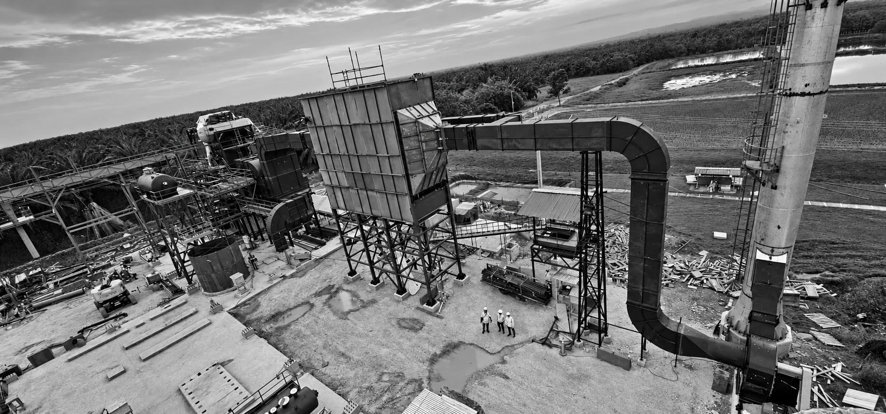
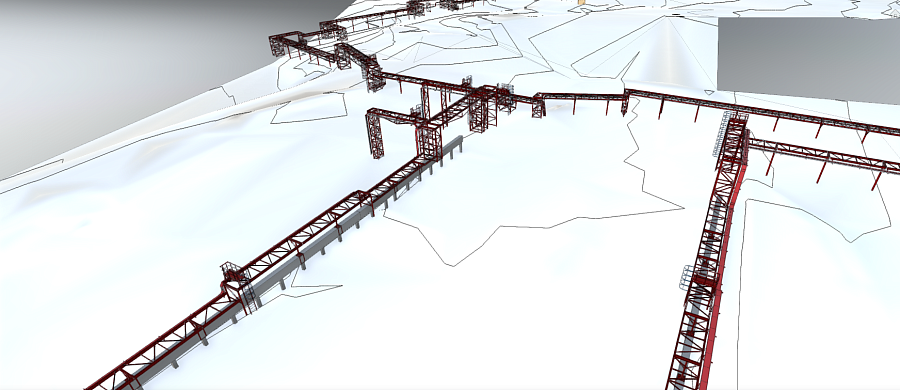
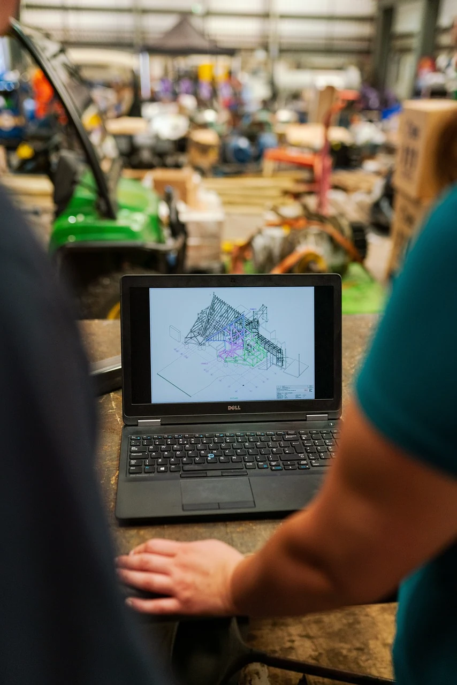

ALSTOM
Project Planning Engineer
Monorriel de Santiago de los CaballerosCronogramas, ruta crítica, consolidación de avances, asignación de recursos y reportes de desempeño para la toma de decisiones.
Ingeniería mecánica y gestión de proyectos.
Diseño, coordinación y control con una misma visión.
Soy Marcos Alejandro De La Cruz. Conecto los requisitos técnicos con el trabajo en campo para apoyar proyectos industriales desde la ingeniería hasta el montaje.
Descargar mi CV ↓
Servicios para convertir requisitos en entregables y mantener una visión clara del alcance, la calidad y el plazo.
Conversemos sobre tu proyecto ↗Diseño mecánico y revisión de planos de tanques y tuberías. Documentación técnica y coordinación con las necesidades de fabricación y montaje.
Planos · Especificaciones · Revisión técnica
Coordinación de disciplinas, contratistas y proveedores. Seguimiento de entregables y cambios para mantener alineados el diseño y la ejecución.
Matriz de entregables · Coordinación técnica · Control de cambios
Estructura WBS, cronogramas en MS Project, análisis de ruta crítica, curvas S e indicadores de valor ganado para identificar desviaciones y apoyar decisiones.
Cronograma · Curvas S · Reportes ejecutivos
Revisión de cumplimiento de planos y especificaciones, seguimiento de inspecciones y apoyo a la resolución de consultas técnicas durante la construcción.
Inspecciones · Trazabilidad · Informes técnicos
La ingeniería aporta valor cuando sus entregables permiten construir, inspeccionar y avanzar. Mi trabajo conecta el detalle con esa secuencia.

MDC / INGENIERÍA DE DETALLEExperiencia en revisión de planos, tanques de almacenamiento y sistemas de tuberías en proyectos industriales.
Planificación, coordinación técnica y reportes que permiten ver el avance y actuar ante las desviaciones.

MDC / GESTIÓN DE INGENIERÍAEnergía, minería, petróleo y ferroviario.
Ingeniería, calidad y gestión de proyectos.
Project Planning Engineer
Monorriel de Santiago de los CaballerosCronogramas, ruta crítica, consolidación de avances, asignación de recursos y reportes de desempeño para la toma de decisiones.
Mechanical Project Engineer
Mine Optimization Projects · 2024—2025Diseño y planificación de proyectos en operación minera, coordinación de contratistas y seguimiento técnico de la ejecución.
Site Project Manager
Modular distillation train · 2023—2024Supervisión de ingeniería de detalle y montaje mecánico. Revisión de planos de tanques y tuberías, materiales, calidad y programación.
Project Engineer · Quality Engineer
Mine Expansion Project · 2019—2023Control de calidad, inspecciones, pruebas, cambios de diseño y coordinación con ingeniería de campo y proveedores.
Ingeniería Mecánica · UTESA
Maestría en Gestión de Proyectos
Diseño de tanques API 650 · Calidad e inspección · Gestión de proyectos · Planificación y control
MS Project · Excel · Python
Tekla Structures · AutoCAD · Revit
Español · Inglés técnico
Una descripción del alcance, los entregables esperados, la información técnica disponible y la fecha requerida. Con esa base podemos definir el apoyo adecuado.
El alcance, las responsabilidades, los entregables, las revisiones y el plazo se acuerdan por escrito antes de iniciar cada trabajo.
Puedes descargar mi CV o visitar mi perfil de LinkedIn desde los enlaces de esta página.